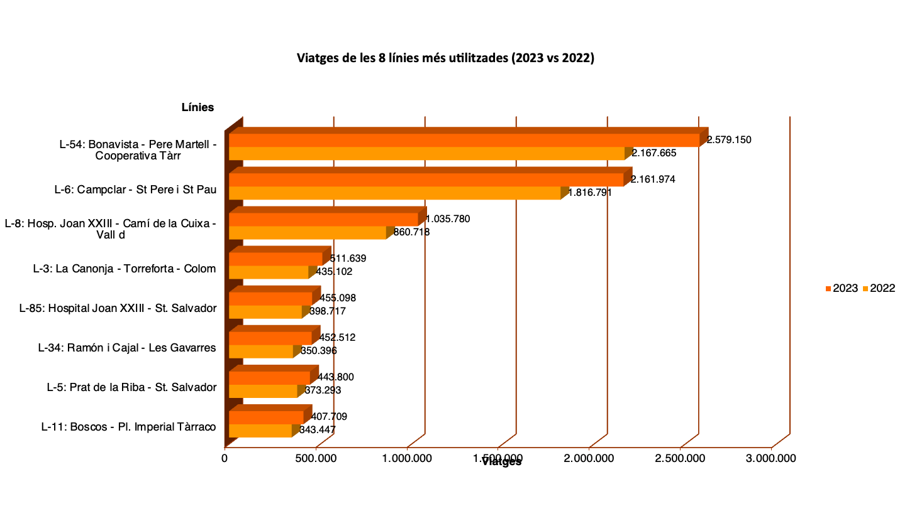

Mobilitat i transport públic
Què és la mobilitat urbana?
La mobilitat urbana és un element clau en l'organització del territori i en la vida quotidiana de les persones. Es refereix als desplaçaments que realitzen els ciutadans diàriament dins de l'entorn de la ciutat per accedir al treball, estudis, salut o oci.
Per què el transport públic és important?
El transport públic connecta diferents zones de la ciutat i facilita l'accés universal a serveis essencials. En una ciutat com Tarragona, amb una topografia complexa i barris dispersos, la xarxa d'autobusos urbans (EMT) juga un paper unificador indispensable.
Estructurant la ciutat
El disseny de les línies i parades no només respon a la demanda, sinó que estructura el creixement de la ciutat. Un sistema de mobilitat sostenible millora la qualitat de l'aire, redueix els embussos i augmenta l'equitat social en proveir accessibilitat sense dependre d'un vehicle privat.

Anàlisi del transport

Ús de les línies de transport
L'anàlisi de dades ens permet identificar quins són els eixos de mobilitat amb més demanda. El gràfic mostra les línies que capturen el major volum de passatgers, evidenciant la importància de les rutes que connecten el centre amb els barris perifèrics i zones d'activitat econòmica.
Per a una informació més detallada sobre l'eficiència i l'ús de les parades, podeu consultar el nostre informe tècnic complet.
📄 Descarregar Informe PDF (30 Parades)